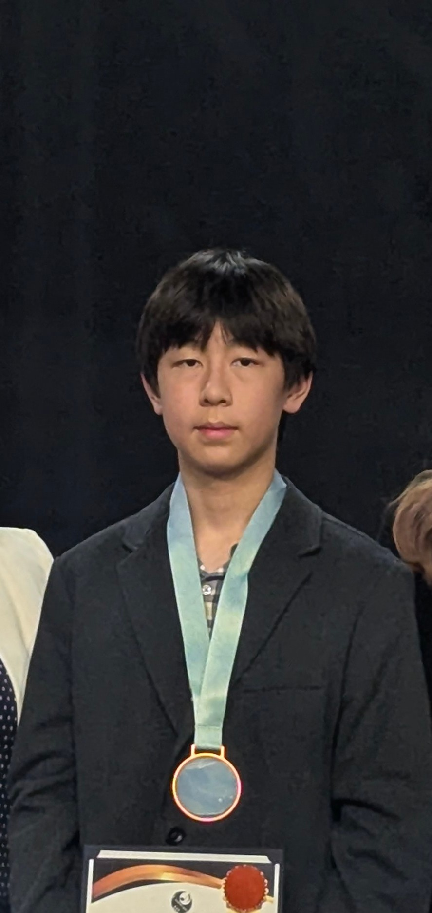
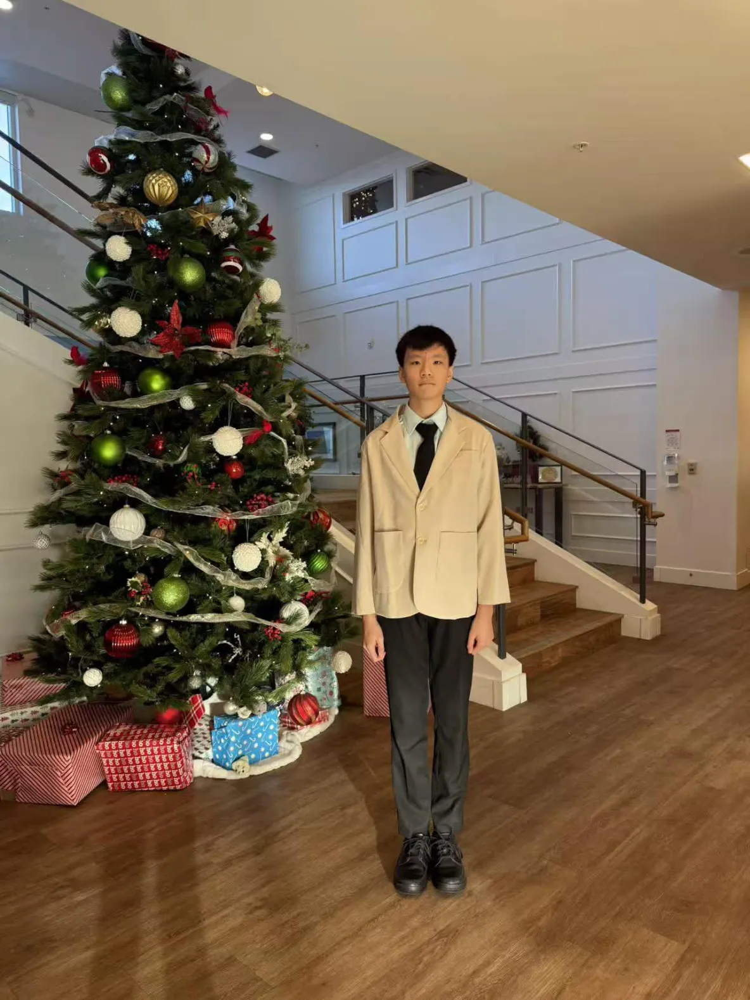

HarmonYouth Foundation is started and run by students. Here's who's behind it.

I'm Adam. I finished Level 10 piano through the RCM program this year, on top of regular school in Calgary. Performing has always been the part I actually look forward to, more than the exams or the grading. Senior homes turned out to be the best place to find that: a real room of people listening, not someone scoring me out of ten.
HarmonYouth started because I wanted that to happen on an actual schedule, with more musicians than just me showing up.
It's not supposed to be a one-time recital. The idea is a date people can plan around, both the homes and the musicians.

I'm Hanry. I'm RCM Level 9 on piano, and I've played clarinet for five years.
I joined HarmonYouth because I wanted our shows to actually run on a set schedule, with more than just two of us showing up each time.
It's not supposed to be random pop-up performances. The idea is fixed dates we commit to, so we're not just showing up unannounced one day.
If you have any questions, reach out to us.
The whole point of HarmonYouth is to bring more student musicians in. As people join the regular roster, they'll show up here too.